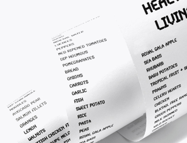

제품소개
인스퍼
다양한 색상과 패턴으로 개성있는 팬시지로서
브랜드 고급 제작물에 사용됩니다.
인쇄용지
도공지와 비도공지로 구분되며,
인쇄 및 필기에 사용되는 종이입니다.
산업용지
재활용 고지와 산림인증을 취득한 원료만을 사용하여
만든 친환경 산업용지입니다.
특수지
종이에 특수한 기능을 갖추어 여러 산업군에서
사용되는 종이입니다.

감열지
종이 표면에 열을 가하면 발색되는 기능성 종이입니다.
주로 영수증, 티켓, 복권용지 등에 사용됩니다.
신소재
지류뿐만 아니라 자연친화적 소재 개발에도 지속적으로
노력하고 있습니다.